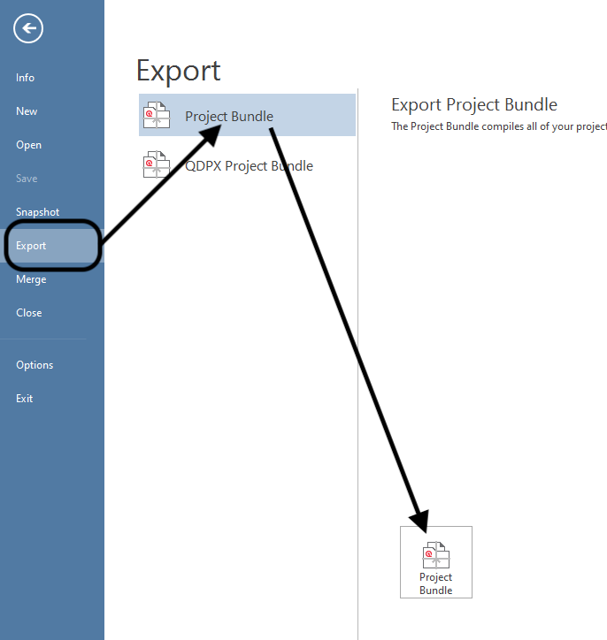
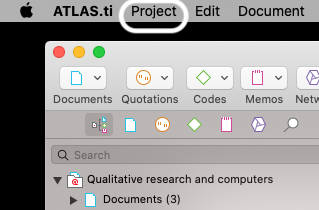
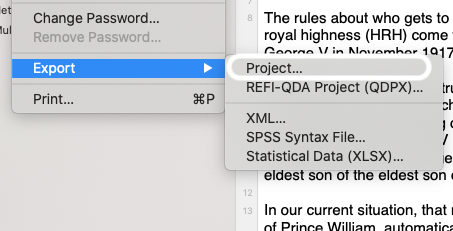

ATLAS.ti 9
ATLAS.ti is one of many software available to assist with qualitative analysis. It specially excels in open coding, i.e., attaching interpretations and concepts to the material during the analysis stage.
Starting to use ATLAS.ti
Installing the software
| Affiliation | Operating system | Who operates the computer | Installation guide |
|---|---|---|---|
| University of Helsinki | Mac | University of Helsinki | Install from Managed Software Center. |
| University of Helsinki | Mac | Personal computer | Install from Download Centre. |
| University of Helsinki | Windows | University of Helsinki | Install from Software Center. |
| University of Helsinki | Windows | Personal computer | Install from Download Centre. |
Cloud or desktop software
ATLAS.ti 9 allows one to use both a desktop software and an online version available via their website similar to Google Docs. At this time, they do not automatically synchronise and you are only able to export a cloud based project, not import a project into it.
Therefore, you need to choose before doing data analysis if you prefer to work on the cloud-based version or on the desktop version.
ATLAS.ti Cloud is perfect for collaborative work: you can conduct annotations on the data together, access code manager and quotations and even create shared memos.
However, ATLAS.ti Cloud is limited in file formats and analysis tools:
only textual data (.docx, .docx) and .pdf files is supported
and some more advanced features, such as automated detection of names, are not available on the cloud version.
Setting up the project
After starting ATLAS.ti, you first need to create a new project. Project corresponds to a set of materials related to your research project, for example all interview materials for your collection. Ideally, this corresponds to a cohesive set of materials used within a single paper or single documents.
Importing documents
After creating the project, you need to import your data into the project.
In ATLAS.ti, data is organised into documents corresponding a single piece unit of data, such as an individual interview.
Data can be in various formats, such as in Microsoft Word (.docx), plain text format (.txt), rich text format (.rtf) or even in Portable Document Files (.pdf).
For interview materials, I recommend using Microsoft Word as these files can be edited e.g. for typos within ATLAS.ti.
However, do note that any changes made to the documents in ATLAS.ti (fixing typos, anonymisation, coding) is not reflected back to the raw data files.
Exporting project
It is possible to export ATLAS.ti project, which allows you to share documents, codes and memos with other people or store it for archival.
For Windows, open the File-menu and choose Export. Click Export Project Bundle.


For Mac, open the Project menu and choose Export. Click Project.


Doing data analysis
Coding materials
Coding takes place through selecting segments of the text to create an quotation. Quotations are segments of texts connected to one or more codes. When initially familiarising yourself with the data, just adding quotations and familiarising yourself with the data is sufficient.
After initial familiarisation with the topic, one moves to add codes to quotations. These codes summarise the conceptual observation, they are later used to further examine the data -- they correspond to your analysis. The code names are shown on the right margin of the text, next to the quotations they are related to. Quotations and codes can be overlap or be inside other quotations if that makes sense. There are two ways to code: open coding allows you to enter the name of the code manually or choose it from previously used codes, while in-vivo code corresponds the selected quotation. For example, certain key phrases used in the data may be better to reflect using in-vivo coding, but often open coding allows more analytical considerations.
It is possible to create codes automatically: use certain key phrases and automatically code sentences or paragraphs where they are used. (This works well in English, but not that well in Finnish.)
Managing and organising codes
During research project, many codes emerge. At least for me, some of them are typos which need to be edited. Some of them may be the same conceptual idea, which has evolved during the work. Code Manager is the interface to rename, merge, split and even remove codes. This helps to maintain the potentially messy list of codes.
Furthermore, it is possible to group codes into wider code groups to aggregate data into more conceptual tools. Similarly, it is possible to change the colour of codes to help further manage the complexity of the codes.
Sometimes codes are overly massive and there is a need to split codes into smaller units. ATLAS.ti supports this as well:
From codes back to quotation
After the code stage, the analysis moves forward. During this time, it is often necessarily to see the quotations for each code. To access these, quotation manager is used. The essential use for quotation manager is to have an easy access to your research materials based on the codes and code groups established in the prior step.
(Video still at ATLAS.ti 8 version, but works fairly similarly on 9.)
Quotation manager allows to create an report of all quotations under a single code. This can be helpful to report the data and provide summarisation of the dat and analysis.
(Video still at ATLAS.ti 8 version, but works fairly similarly on 9.)
More complex analysis
ATLAS.ti is an versatile environment to work with qualitative data. For example, it allows to conduct queries to the data, examining if codes overlap or are near-by each other. Thus, one can examine data using combinations of codes through search interface.
It is also possible to create linkages between codes. These can be visualised as a network to help further analysis of them. The network view can help to examine how documents, quotations and codes together visually.
(Video still at ATLAS.ti 8 version, but works fairly similarly on 9.)